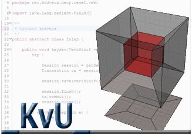

| KodVeUs > Kumanifest Manifesto Programý |  | ||||||||||||||
Belki de en kritik soru þu an bu. Nedir bu kumanifest? Ne iþe yarar? Nereden çýkmýþtýr? Bu sayfada elden geldiðince bu sorulara cevap arayacaðýz. Kumanifest programý, Kodveus' un geliþtirmekte olduðu; özellikle konteyner taþýmacýlýðý ile uðraþan firmalarýn ihtiyaç duyduðu; yükleme giriþlerinin yapýlabilmesi, manifesto, yükleme ve boþaltma listeleri, konþimento gibi raporlarýn hazýrlanabilmesi ve gümrük tescil iþlemlerinin EDI dosyalarý ile yapýlabilmesini saðlayan bir projedir.
|
|||||||||||||||
Kumanifest konþimento, konteyner, mal tanýmlarý bilgilerinizi girebilmenizi kolaylaþtýracaðý gibi, bilgilerinizin bilgisayar ortamýnda tutulmasýný, korunmasýný ve yedeklenebilmesini saðlayacaktýr. Yalnýzca bir defa veri giriþi yaparak, ayný bilgiyi farklý þekillerde çýktýlara dönüþtürebilecek, farklý amaçlar için kullanabilecek ve arþivleyebileceksiniz. Kumanifest halen geliþtirilmekte olan bir programdýr ve sizlerden gelecek isteklerin geliþtirme takýmýmýz tarafýndan deðerlendirilmesi ve eklenmesi sonucu ilerde çýkacak olan sürümler yeni özelliklere sahip olacaktýr. Þu an elinize gelecek olan sürüm sadece temel ihtiyaçlara karþýlýk verebilir. Bir sonraki sürümde yapýlmasý planlanan özellikler þunlardýr: 1. Gümrük tescil iþlemlerinizi kolaylaþtýrmak için EDI dosyalama, yani elektronik veri transferi dosyasýnýn hazýrlanmasý özelliðinin eklenmesi. Bu özellik sayesinde gümrük tescil iþlemlerinizi internet üzerinden yapabilen programlara, tescil bilgilerini doðrudan aktarabilecek; bu sayede elle yapýlan birçok iþlemi hýzlandýrýp hatasýz hale getirebileceksiniz ve tekrar tekrar ayný verilerin bilgisayar ortamýna girilmesine gerek duymayacaksýnýz. Kumanifest'in ilk sürümüne http://code.google.com/p/kumanifest/downloads/list adresinden ulaþabilirsiniz. Programý indirebilir, kurulum yönergelerini uygulayarak kurabilir ve ücretsiz olarak kullanabilirsiniz. Kullanýcý kýlavuzunu http://code.google.com/p/kumanifest/wiki/KullaniciKilavuzu adresinde bulabilirsiniz. Kumanifest, Genel Kamu Lisansý(GPL) na sahiptir; bu kapsamda ücretsiz olarak kullanabilir, paylaþabilir hatta deðiþtirebilirsiniz. Lisansýn Türkçesi, Ýngilizcesi ve programýn kurulum yönergeleri indireceðiniz kurulum paketi içerisinde ve projenin sayfasýnda bulunmaktadýr: http://kodveus.blogcu.com Kumanifest programý maddi bir beklenti ile geliþtirilmedi. Tamamen özgür yazýlým felsefesi gözetilerek ve faydalý bir yazýlým olmasý amaçlanarak geliþtirildi. Tasarým ve geliþtirme aþamasýnda yine kendisi gibi özgür yazýlýmlar kullanýldý. Programýn kurulumu ve kullanýmý sýrasýnda karþýlaþacaðýnýz tüm sorunlarý kodveus@gmail.com eposta adresine yazabilirsiniz. Kumanifest hakkýnda daha detaylý ve en güncel bilgiye http://code.google.com/p/kumanifest/w/list adresinden ulaþabilirsiniz. Kodveus un bilgi paylaþým günlüðüne ulaþmak için http://kodveus.blogspot.com adresini kullanabilirsiniz. Kumanifest programý temel olarak 3 bölümden oluþmaktadýr: 1) Ekranýn sol tarafýnda bulunan aðaç görünümünden gemi ve seferlere ulaþýlabilir.
Ana ekranýn sað tarafýnda bulunan bu paneller, Bl, konteyner ve kargo kayýtlarýnýn giriþi ve düzenlenmesinde kullanýlacak olan bölümlerdir. Kayýt giriþleri ve düzenlenmesi yine ekranýn sað üst bölümünde bulunan tuþlar yardýmý ile yapýlýr. Yapýlan giriþlerin çýktýlarý rapor olarak alýnabilir.
Kumanifest' in kurulum dosyasýný indirip, yükleme ve veritabaný oluþturma iþlemleri tamamlandýktan sonra, program kullanýlýrken ihtiyaç duyulacak liman, ofis, paket tipi v.b. deðiþmez verilerin tanýmlanmasý gerekecektir. Bu veri giriþleri, ana ekranda bulunan üst menüdeki Tools seçeneði altýndaki Parameters altseçeneðinde görülebilecek olan Pack, Office, Commodity gibi deðerlerin teker teker girilmesi ile yapýlýr. Buradaki bazý giriþler birbiri ile baðýmlýdýr; bu nedenle veri giriþlerini yukarýdan aþaðýya doðru, yani sýrasýyla Pack, Office, Commodity, Container Size, Container Type ,... þeklinde yapmanýz sorun yaþamanýzý engelleyecektir. Deðiþmez verileri tanýmladýktan sonra konþimento(BL) giriþlerinizi yapmaya baþlayabilirsiniz. Ana ekranýn sol tarafýndaki aðaç görünümünde, ilgili yÜkleme bilgilerine fare ile çift týklayarak tanýmladýðýnýz bir sefere ulaþabilirsiniz. Ana ekran görüntüsünün üst bölümünde bulunan menüdeki seçeneklerin bir kýsmý program ilk açýldýðýnda etkin olmayacaktýr. Bu seçeneklerin bir kýsmý seferlere bir kýsmý da konþimentolara ait özellikler olduðundan, ancak ilgili sefer veya konþimento seçildiðinde etkin hale gelecektir. Rapolar menüsü seçenekleri bunlara örnek olarak verilebilir. Ekran görüntülerinden de anlaþýlacaðý gibi programýn sol tarafýnda, gemi/sefer ve BL leri listeleyen bir aðaç görünümü bulunmaktadýr. Bu aðaç görünümünde bulunan Liman/Ofis, gemi ve sefer bilgileri, sizin parametreler bölümü olan "Tools->Parameters" menüsündeki seçeneklere yaptýðýnýz tanýmlamalardan oluþturulur. Seferler altýna bilgilerini gireceðiniz BL numaralarý da yine bu aðaç görünümünde listelenecektir. Yeni bir BL kaydý girebilmek için ilgili sefer seçildikten sonra; BL bilgilerini sað taraftaki panelde doldurduktan sonra ekranýn sað üst köþesinde bulunan +(artý) iþareti þeklindeki ekle tuþunu kullanarak kaydýn saklanmasýný saðlayabilirsiniz. Bu iþlem sýrasýyla þöyle yapýlýr: 1. Sol taraftaki aðaç görünümünden BL'in ilgili seferi seçilir Buradan seçilen BL bilgileri saðdaki panele yüklenecek ve seçme iþlemi ile birlikte bu bilgiler üzerinde deðiþtirme/silme gibi iþlemler yapýlabilecektir. Seçilen BL'in konteyner detaylarýný görebilmek için üst tarafta bulunan "Container" sekmesi seçilmelidir. Burada her bir konteyner içerisinde bulunan mal detaylarý da görülebilir ve deðiþtirilebilir. Tanýmladýðýnýz BL'lere ilgili olduklarý konteynerleri baðlayabilmek için sað taraftaki panelde bulunan "Container" sekmesini seçerek konteyner panelini açmanýz gerekir. Yeni bir konteyner kaydý girebilmek için sýrasýyla: 1. Sol taraftaki aðaç görünümünden ilgili BL seçilir Kargo detay kaydý girebilmek Konteynerler içerisinde bulunan yük/kargo bilgileri de yine konteyner panelinde eklenebilir, görülebilir veya deðiþtirilebilir. Her bir konteynerin içerisindeki kargo bilgileri ayrý ayrý tanýmlanmalýdýr. Girilen kargo detaylarý, konteyner paneli içerisindeki, konteynerlerin listelendiði tabloda ilgili konteynerin seçilmesi ile altta bulunan kargo detay tablosunda listelenecektir. Bu liste üzerinde ilgili kargo seçilerek tablonun altýnda bulunan "New Cargo", "Delete Cargo" ve "Update Cargo" tuþlarý ile gerekli düzenlemeler yapýlabilir. Yeni bir kargo detayý girebilmek için izlenecek yol þu þekildedir: 1. Sol taraftaki aðaç görünümünden ilgili BL seçilir Raporlar Kumanifestin kolaylaþtýrdýðý en önemli özellik raporlamalardýr. Konþimento, manifesto ve yükleme listeleri gibi raporlarý menüdeki "Reports" seçeneði altýnda bulabilirsiniz. Giriþi yapýlan tüm veriler bu raporlarda düzenlenmiþ ve özetlenmiþ bir þekilde karþýnýza çýkacaktýr.
Her bir gemi/sefer için manifesto ve yükleme listesi hazýrlayabilecek, konþimentolarýnýzýn detaylarýný gösteren "Bill Of Lading" raporu hazýrlayabileceksiniz. Seçtiðiniz rapor görüntülendiðinde pencerenin sol üst bölümünde bulunan tuþlar ile yazýcý çýktýsý alabilir yada raporu .pdf, .xls, .rtf, .html gibi dosya formatlarýnda saklayabilirsiniz. |
|||||||||||||||
Kumanifest programý java programlama dili ile geliþtirilmiþ olup, veritabaný olarak da mySQL kullanmaktadýr. Bu nedenle, Kumanifest'in çalýþabilmesi için kullandýðýnýz bilgisayarda, java uygulamalarýný çalýþtýrmak için gerekli olan Java çalýþma ortamýnýn(JRE) ve mySQL veritabanýnýn kurulu olmasý gerekmektedir. Bu gereksinimlerin nasýl kurulacaðý aþaðýda anlatýlmaktadýr. Kurulum Aþamalarý
|
|||||||||||||||
Kod ve Us Kimdir? Biz Ege Üniversitesi Bilgisayar Mühendisliðinde tanýþan ayný þehirden çýkan iki kiþiyiz. Lisans bittikten sonra biraz daha okumaya karar verdik ve Yüksek Lisansý ayný bölümde yaptýk. Kafamýzda sürekli bazý fikirler oluþuyordu, Serbest yazýlýma iyice merak sarmýþtýk. 3. Sýnýfta baþlayan staj proje arkadaþlýðý daha büyük projeler yapmak üzere evrimleþti. IBM Linux projesine katýldýk ama bitiremedik. Daha sonra Yüksek lisans sürecinde kafamýzdaki paylaþmak istediklerimizi paylaþmak için bir site kurduk. Ayrýca kafamýzdaki bazý projeleri serbest yazýlým olarak üretmeye karar verdik. Bu amaçla bir kaç yazýlýma baþladýk. Yoðun geçen yaþamlarýmýzýn bize verdiði az zamanda ortak bir þeyler yapmaya çalýþýrken sayýmýz arttý azaldý ama sürekli bir þeyler ürettik. Üretmeye de devam ediyoruz. Ýlk serbest yazýlým projemizi internet üzerinden daðýtabildiðimiz zaman biz bütün emeklerimizin gerçekten bir iþe yaradýðýný görmüþ olacaðýz. Her ne kadar sitemiz sayesinde bu emeklerin boþa gitmediðini görsek te biz de bir þeyler baþarýyoruz demek için bir projemizi internetten indirilebilir halde yayýnlamamýz gerektiðine inanýyoruz. |
|||||||||||||||